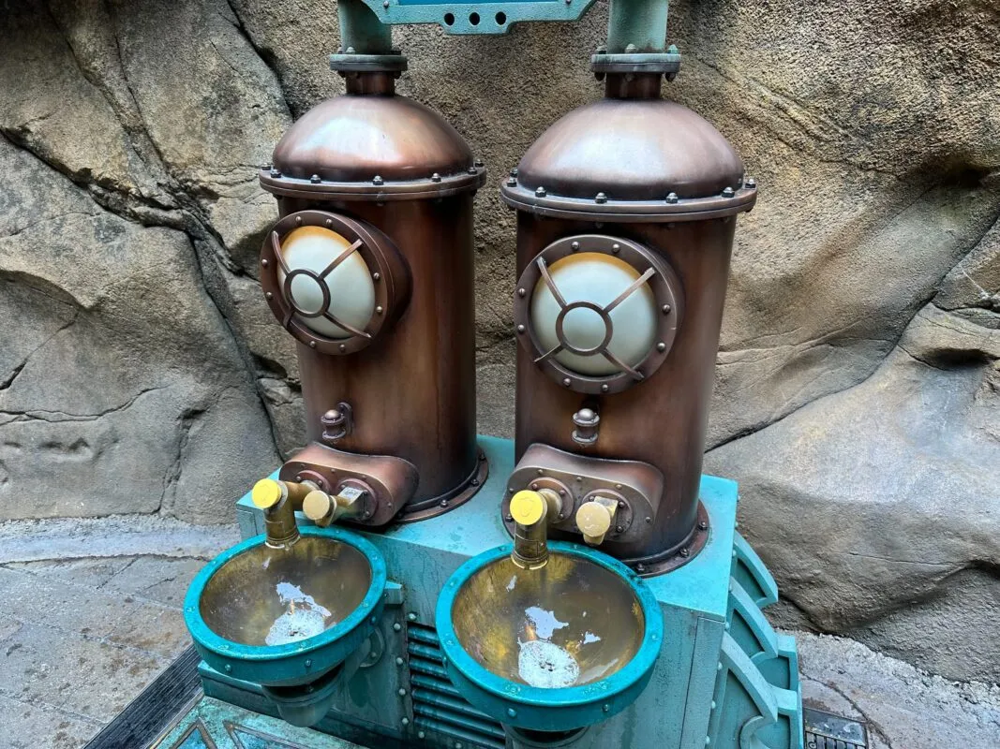

1. Introduction
Soapamorph is an animatronic soap dispenser prototype inspired by biomechanic horror aesthetics commonly associated in science fiction media, including films, games and themed entertainment environments. Whilst influenced by these styles, the final concept was intentionally designed into an original form to avoid direct replication of exiting copyrighted intellectual property.
The product is intended for installation within entertainment-based environments such as theme park attractions, escape rooms, immersive experiences and horror-themed facilities, where interactive products can enhance customer engagement and experience. The prototype focuses on visual impact alongside mechanical functionality, combining animatronic movement with practical hygiene applications.
The proposed mechanism operates through a sensor-activated system that detects movement or placement of a user’s hand. Once movement has been detected, an internal push mechanism extends the tongue/inner jaw assembly outward, whilst the external exoskeletal structure simultaneously lowers the lower jaw. After a short delay, liquid soap is dispensed onto the user’s hand before the mechanism retracts, returning the tongue and jaw assembly to its original closed position. This sequence was designed to create an immersive and theatrical interaction whilst maintaining the functional requirements of a commercial soap dispenser.
The project was developed collaboratively, with responsibilities distributed across multiple areas of the design and development process. This includes the base structure, mechanical system, exoskeletal frame, and a design skull supportive frame. The combined objective of these components was to produce a simulated, engaging animatronic whilst balancing aesthetics with functionality and reasonable manufacturing capabilities.
In addition to the development of the prototype itself, the project investigates a range of production methods, material properties, and manufacturing constraints associated with transforming a virtual design into a physical artefact. Particular consideration was given to material longevity, chemical resistance, water resistance, environmental considerations, and the feasibility of cost-effective batch or mass production methods suitable for future commercial development.
2. Background
The concept development of Soapamorph was heavily influenced by themed entertainment environments that utilise exaggerated visual design, animatronic movement features, and horror-based aestheticsto enhance user engagement and immersion. Inspiration was drawn from large-scale theme park attractions (such as Alton Towers and Madame Tussauds Wax Museum), interactive scare experiences and science fiction creature design commonly found within the entertainment industries.
A significant visual influence for the project was the H. R. Giger’s Xenomorph design from the Alien franchise. Particular inspiration was taken from the elongated cranial structure. Additional inspiration was also founded from the organic and bioengineered creature designs in the warhammer universe, specifically in relation to the cheek bones of the model. While these influences informed the overall visual appearance of the product, the final design was intentionally modified into an original appearance to avoid direct replication of copyrighted property.
The product was designed to function as either a wall-mounted or standalone soap dispensing unit positioned above a sink, similiarly to public hygiene dispensers commonly found in entertainment venues or amusement facilities. Existing themed hygiene installations such as decorative sink and dispenser units within major theme parks and farm/zoo parks demonstrate how bathroom products can also contribute towards immersive environmental experiences. An example of this approach can be observed in Disneyland such as the Donald Duck sink unit.

The project combines practical functionality with animatronic interaction to create a product that operates as both a hygiene appliance and a themed entertainment feature. This combination provided an opportunity to investigate how digital design methods are used, mechanical systems are created, and how prototyping techniques can be integrated within a product development process within a team, within a real-time industry experience.
The aim of this project was to design, simulate and prototype an animatronic soap dispenser using digital design and prototyping techniques explored throughout the module, while critically evaluating the effectiveness, suitability, and limitations of these techniques withint the context of the project product development and physical prototyping.
4. Objectives
- Develop a 2D Concept Design to establish overall visual direction of the product.
- Produce a 3D Digital Preliminary Design using Computer Aided Design.
- Design a functional Jaw and Tongue movement mechanism.
- Evaluate suitable materials for long-term exposure to target environment (water, steam and soap).
- Assess suitability of production methods for large or small-scale manufacturing.
- Critically evaluate the production methods and techniques explored inside the module and justify use or disuse of them.
- Demonstrate with either a physical demonstration or simulated demonstration, a working prototype mechanism on the model.
- Finalise portfolio showing all contributed work towards the project.
- Reflect on work, limitations and future improvements.
5. Target Clients
5.1. Novelty and Home Décor.
Soapamorph was designed mostly to appeal to entertainment or engagement facilities, however, there may be a market for consumers interested in novelty products, collectables and unconventional interior decoration. The exaggerated biomechanical aesthetic allows the product to function not only as a practical hygiene device, but also as a display piece suited to themed out homes/rooms, gaming themed rooms for example or even as an alternative home decoration for someone who likes to collect unusual products. Celeberaties for example collect many unique items that might not be to everyones taste, for example Stephen Morris the Joy Division Drummer likes to collect life-sized doctor who memorabilia, this includes some original Darleks according to lifestyle fortress "https://lifestylefortress.com/the-most-bizarre-things-celebrities-collect/".
5.2. Entertainment Industry.
The groups main target includes the entertainment industry which can include theme parks, horror attractions, escape rooms and immersive experience centers. Within these environments industries have interactive props, animatronic features and interactive, engaging experiences throughout their facilities. All of which are commonly used to increase customer engagement, customer revenue and enhance environmental immersion. Soapamorph was therefore designed to provide both practical functionality and theatrical interaction suitable for themed installation.
6. Methods of Production
Design
During the early stages of development, the group conducted a collaborative meeting to discuss potential themes, design concepts and a project theme that would be both technically achievable and creatively engaging. Multiple ideas were proposed and evaluated based on their visual impact, mechanical feasibility and production methods.
IDEA'S PRESENTED
WindmillDroneBandOctopusButterflyJurassic Park Dinosaur (own original version non-copyrighted)- Xenomorph from the franchise Aliens(own original version non-copyrighted)
The group ultimately chose inspiration from the creature Xenomorph from the Aliens H. R. Giger’s franchise https://academic.oup.com/book/45696/chapter-abstract/398101313?redirectedFrom=fulltext
This early decision established a clear visual direction for the project whilst also providing opportunities to investivate a range of digital and practical design and manufacting development processes.
6.1. Blender - Computer Aided Design - Used.
The group decided to utilise Blender as the primary software for developing the external skull and spine structure, and overall aesthetic design of the product. The software was selected due to its ability to produce highly detailed organic surface modelling, which was considered essential for achieving a more realistic biomechanical horror appearance. Compared to more engineering focused CAD, (Computer Aided Design), platforms, Blender provided greater flexibility when producing complex surface geometry, scuplted forms, and refined visual detailing.
With the use of Blender the group was able to rapidly iterate design variations, duplicate backups, adjust proportions and refine surface features whilst decimating the polycount for easier less confusing prints. This improved efficency during the Preliminary Design Phase. Whilst the group had access to AutoCAD and Fusion 360 platforms, Blender provided a more artistic and functional method of design allowing extra detailing between lines, verticies and sections, to create a more realistic model.
Advantages:
- Open Source: Blender is open source and freely available with or without student discount so accessibility was a lot easier.
- Complex Modelling Capabilities: Blender is able to handle more complex intricate designs, Blender has been commonly used in animation, scenery modelling, some games development models and hobbists making detailed DIY products with designs.
- Rapid Iteration: The software allows modification of meshes, proportions and surface features making refinement much easier in detailed sculpts or design methods.
- Extensions: Blender allows accesibility to extensions to help workflow and identify product errors before prints. Such as the 3D printing extension, it can identify poor geometry, loose geometry or even poor connections and offers an automated fix option for times where every other method has failed.
- Compatibility with 3D printing: Easy to use with cura or any slicer. DIY 3D printing hobbists use blender for this reason.
Disadvantages and limitations:
- Not beginner friendly: A main disadvantage of using Blender is its steep learning curve, particularly for users with limited previous experience in Computer Aided Design. Due to the extensive range of tools and functions integrated within the software, new users may initially find the interface overwhelming and complex. Blender provides numerous methods which include, scuplting, texturing, rigging, animation, rendering, geometry editing, boolean, array, and simulation tools, all of which require time, patience and practice to develop proficiency.
- Limited Engineering Precision: Although Blender can be used to model mechanical parts, it does lack some advanced assembly, tolerance and constaint tools available in AutoCAD and Fusion 360. Designing functional components or mechanisms can be even more time consuming on Blender compared to AutoCAD and Fusion 360 because of the lack of precision and even when completing the model they can still be less accurate than CAD platforms specially designed for mechanics and components. Blender to the best of it's ability is best to be used for unpredictable, unprecise modelling, where modelling is design and visual focused.
- Topology and Mesh complexity and issues: Using Blender makes detailed models easier to generate dense geometry or irregular mesh topology the more you alter your model. This can create difficulties when it comes to 3D printing. This also makes it difficult for mass manufacturing if models need to constantly be altered, you would need to keep saving backups of each stage of the model to go back onto. This also means that there is always additional cleanup before finalising a model, this can include cleaning up inverted geometry, hollow sections or holes, loose geometry and so on. Many designers rely on Extensions to make it easier for them when it comes to cleaning up their models.
- Assembly and mechanical assembly difficulties: Although you can make individual components to a model, assembly especially mechanical assembly can prove to be challenging as Blender was not equipped to handle precise advanced constraint and tolerance analysis. To assemble models or components together that have movement, more time is consumed in altering the models which don't always gurantee an accurate precise measurement or gap between joints.
- Not suitable for manufacturing design documentation: Blender focuses on visual design modelling rather than engineering communicated documents found on blueprints, precise specifications will be too complex to handle on Blender and would better be used on CAD platforms such as Fusion 360 or AutoCAD platforms which are more equipped to handle specific requirements and assembly sizing.
6.2. 3D scanning - Used.
6.3. Fusion 360 - Computer Aided Design - Used
6.4. Motion Capture - Unused.
6.5. Haptic Scuplting - Unused.
Production
6.6. 3D Printing - Used.
6.7. Resin - Unused.
6.8. Composite Production - Silicone - Unused.
6.9. Laser Cutting - Unused.
Bonus Production
Woodworking.
7.Materials Research
Material Goals.
Materials Available to the Project - Printing.
The project focused entirely on printing methods due to complications with models such as constant errors needing to be adjusted and postponing time of production, availability issues with certain labs and limited resources available.
Silicone.
TPU.
PP (Polypropylene)
PLA
Resin
PETG
Project Materials Choice
Start of Project Plans.
End of Project Plan - Final Print.
8.Environmental Stability / Eco Approaches
Recycability, longevity and Environmental Impact
Silicone:
TPU:
PP (Polypropylene):
PLA:
Resin:
PETG:
A longer lasting product can sometimes be more evironmentally beneficial than a biodegradable product requiring frequent replacement.
Reflection